1과목: 응용역학
1. 그림과 같은 반경이 r인 반원 아치에서 D점의 축방향력 ND의 크기는 얼마인가?
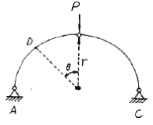
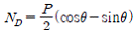
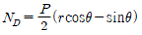
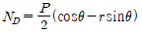
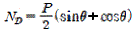
2. 직경 D인 원형 단면의 단면 계수는?
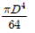
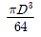
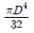
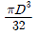
3. 다음 트러스에서 AB부재의 부재력으로 옳은 것은?
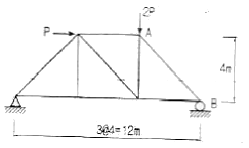
4. 15㎝×30㎝의 직사각형 단면을 가진 길이 5m인 양단힌지 기둥이 있다. 세장비 λ는?
5. 그림과 같이 단면적이 A1=100cm2이고, A2=50cm2인 부재가 있다. 부재 양끝은 고정되어 있고 온도가 10℃ 내려갔다. 온도 저하로 인해 유발되는 단면력은? (단, E=2.1×106kg/cm2, 선팽창계수(α)=1×10-5/℃)
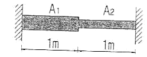
6. 평면응력상태 하에서의 모아(Mohr)의 응력원에 대한 설명 중 옳지 않은 것은?
7. 길이 20㎝, 단면 20㎝×20㎝인 부재에 100t의 전단력이 가해졌을 때 전단 변형량은? (단, 전단 탄성계수 G=80000kg/cm2이다.)
8. 다음 구조물에서 B점의 수평방향 반력 RB를 구한 값은? (단, EI는 일정)
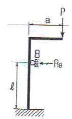
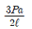
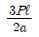
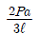
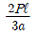
9. 재질과 단면이 같은 아래 2개의 캔틸레버보에서 자유단의 처짐을 같게 하는 P1/P2의 값으로 옳은 것은?
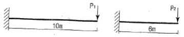
10. 그림과 같은 단순보에 모멘트 하중 M이 B단에 작용할 때 C점에서의 처짐은?
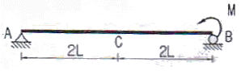
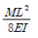
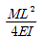
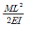
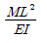
11. 강재에 탄성한도보다 큰 응력을 가한 후 그 응력을 제거한 후 장시간 방치하여도 얼마간의 변형이 남게 되는데 이러한 변형을 무엇이라 하는가?
12. 그림과 같은 단면을 갖는 부재(A)와 부재(B)가 있다. 동일 조건의 보에 사용하고 재료의 강도도 같다면, 휨에 대한 강도를 비교한 설명으로 옳은 것은?
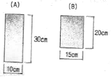
13. 다음 내민보에서 B점의 모멘트와 C점의 모멘트의 절대값의 크기를 같게 하기 위한 L/a의 값을 구하면?
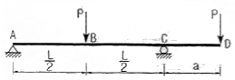
14. 탄성변형에너지는 외력을 받는 구조물에서 변형에 의해 구조물에 축적되는 에너지를 말한다. 탄성체이며 선형거동을 하는 길이가 L인 켄틸레버보에 집중하중 P가 작용할 때 굽힘모멘트에 의한 탄성 변형에너지는? (단, EI는 일정)
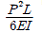
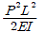
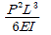
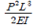
15. 그림과 같은 단면에 전단력 V=60t이 작용할 때 최대 전단응력은 약 얼마인가?
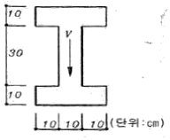
16. 그림과 같은 캔틸레버보에서 하중을 받기전 B점의 1㎝ 아래에 받침부(B')가 있다. 하중 20t이 보의 중앙에 작용할 경우 B'에 작용하는 수직반력의 크기는? (단, EI=2.0×1012kg·cm2이다.)
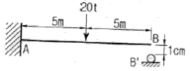
17. 그림과 같이 이축응력(二軸應力)을 받고 있는 요소의 체적변형율은?(단, 탄성계수 E=2×106kg/cm2, 프와송비 v=0.3)
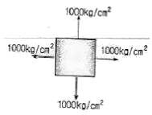
18. 다음 그림에서 A점 모멘트 반력은 ?(단 각 부재의 길이는 동일함.)
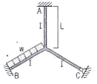
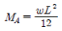
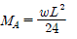
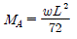
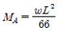
19. 그림과 같은 강재(steel) 구조물이 있다. AC, BC 부재의 단면적은 각각 10cm2, 20cm2이고 연직하중 P=9t이 작용할 때 C점의 연직처짐을 구한 값은? (단, 강재의 종탄성계수는 2.⑤×106kg/cm2 이다.)
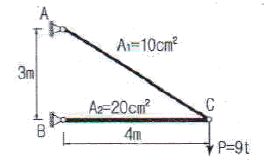
20. 단순보 AB위에 그림과 같은 이동하중이 지날 때 A점으로부터 10m 떨어진 C점의 최대 휨모멘트는?
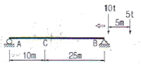
2과목: 측량학
21. 시가지에서 25변형 폐합트래버스측량을 한 결과 측각오차가 1' 5"이었을 때, 이 오차의 처리는? (단, 시가지에서의 허용 오차:
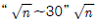
, n:트래버스의 측점 수, 각 측정의 정확도는 같다.)22. 줄자로 거리를 관측할 때 한 구간 20m의 정오차가 +2mm라면 전 구간 200m를 측정했을 때 정오차는?
23. 삼각형의 토지면적을 구하기 위해 밑변 a와 높이 h를 구하였다. 토지의 면적과 표준오차는? (단, a=15±0.015m, h=25±0.025m)
24. 지형공간전보체계의 활용분야 중 토목분야의 시설물을 관리하는 정보체계는?(오류 신고가 접수된 문제입니다. 반드시 정답과 해설을 확인하시기 바랍니다.)
25. 대상구역을 삼각형으로 분할하여 각 교점의 표고를 측량한 결과가 그림과 같을 때 토공량은?
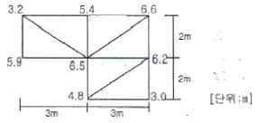
26. 트래버스측량의 각 관측 방법 중 방위각법에 대한 설명으로 틀린 것은?
27. 노선측량의 단곡선 설치 방법 중 간단하고 신속하게 작업할 수 있어 철도, 도로 등의 기설곡선 검사에 주로 사용되는 것은?
28. 축척 1:1500 지도상의 면적을 잘못하여 축척 1:1000으로 측정하였더니 10000m2가 나왔다면 실제면적은?
29. 곡선 반지름이 500m인 단곡선의 종단현이 15.343m이라면 이에 대한 편각은?
30. 그림과 같은 복곡선에서 t1+t2의 값은?
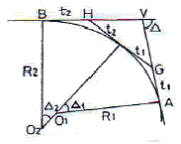
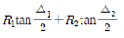
31. 축척 1:5000 지형도 상에서 어떤 산의 상부로부터 하부까지의 거리가 50mm이다. 상부의 표고가 125m, 하부의 표고가 75m이며 등고선의 간격이 일정할 때 이 사면의 경사는?
32. 초점거리 15.3㎝의 카메라로 찍은 축척 1:20000인 연직사진에서 주점으로부터의 거리가 60.3mm인 지점의 비고가 200m라면 이 비고에 의한 기복 변위량은?
33. 그림과 같은 삼각망에서 CD의 거리는?
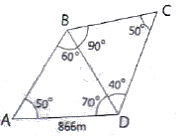
34. 양수표의 설치 장소로 적합하지 않은 곳은?
35. A, B, C 각 점에서 P점까지 수준측량을 한 결과가 표와 같다. 거리에 대한 경중률을 고려한 P점의 표고 최확값은?
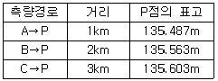
36. 항공사진의 표정작업 중 수준면의 결정 및 사진축척을 결정하는 표정은?
37. 다음 설명 중 틀린 것은?
38. 측량에서 일적으로 지구의 곡률을 고려하지 않아도 되는 최대 범위는? (단. 거리의 정밀도는 10-6까지 허용하며 지구 반지름은 6370km 이다.)
39. 평판측량의 방사법에 관한 설명으로 옳은 것은?(문제 오류로 보기 내용이 누락되어 있습니다. 정답은 4번입니다. 누락 내용을 아시는분 께서는 오류 신고를 통하여 작성 부탁 드립니다.)
40. 수준측량에서 레벨의 조정이 불완전하여 시준선이 기포관축과 평행하지 않을 때 생기는 오차의 소거 방법으로 옳은 것은?
3과목: 수리학 및 수문학
41. 다음 설명 중 옳지 않은 것은?
42. 수중에 설치된 오리피스의 수두차가 최대 4.9m이고 오리피스의 유량계수가 0.5일 때 오리피스 유량의 근사값은? (단, 오리피스의 단면적은 0.01m2이고, 접근유속은 무시한다.)
43. 피압 지하수를 설명한 것으로 옳은 것은?
44. 양수기의 동력 [kW]을 구하는 공식으로 옳은 것은? (단, Q:유량[m3/sec], η:양수기의 효율, H:총 양정[m])
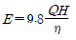
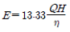
45. 속도변화를 △v, 질량을 m이라 할 때, △t 시간동안 이 물체에 작용하는 외력 F에 대한 운동량 방정식은?
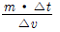
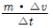
46. 개수로에서 도수 발생시 사류 수심을 h1, 사류의 Froude수를 Fr1이라 할 때, 상류 수심h2를 나타낸 식은?
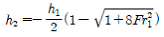
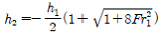
47. 직각삼각형 예연 위어의 월류수심이 30㎝일 때 이 위어를 통과하여 1시간 동안 방출된 수량은? (단, 유량계수(C)=0.6)
48. 강우강도에 대한 설명으로 틀린 것은?
49. 관수로 내의 손실수두에 대한 설명 중 틀린 것은?
50. 대기압이 762mmHg로 나타날 때 수은주 3⑤mm의 진공에 해당하는 절대압력의 근사값은? (단, 수은의 비중은 13.6이다.)
51. Darcy의 법칙(v=k·l)에 관한 설명으로 틀린 것은? (단, k는 투수계수, l는 동수경사)
52. 내경 10㎝의 관수로에 있어서 관벽의 마찰에 의한 손실수두가 속도수두와 같을 때 관의 길이는? (단, 마찰손실계수(f)는 0.03이다.)
53. 지하수의 연직분포를 크게 나누면 통기대와 포화대로 나눌 수 있다. 다음 중 통기대에 속하지 않는 것은?
54. 강우로 인한 유수가 그 유역 내의 가장 먼 지점으로부터 유역출구까지 도달하는데 소요되는 시간을 의미하는 것은?
55. 다음 중 무차원이 아닌 것은?
56. 그림과 같은 지름 3m, 길이 8m인 수문에 작용하는 전수압 수평분력 작용점까지의 수심은?
57. 하천의 모형실험에 주로 사용되는 상사법칙은?
58. DAD 해석에 관계되는 요소로 짝지어진 것은?
59. 단위유량도(Unot hydrograph)에 대한 설명으로 틀린 것은?
60. 배수(back water)에 대한 설명 중 옳은 것은?
4과목: 철근콘크리트 및 강구조
61. 그림과 같은 T형 단면의 보에서 설계 휨모멘트강도(øMn)을 구하면? (단, 과소 철근보이고, fck=21MPa. fu=400MPa, As=1926mm2이고, 인장지배단면이다.)
62. 폭이 300mm, 유효깊이가 500mm인 단철근 직사각형보 단면에서 fck=35MPa, fu=350MPa 일 때, 강도설계법으로 구한 균형철근량은 약 얼마인가?
63. 자중을 포함한 계수등분포하중 75kN/m를 받는 단철근 직사각형단면 단순보가 있다. fck=28MPa, 경간은 8m이고, b=400mm, d=600mm일 때 다음 설명 중 옳지 않은 것은?
64. 철근 콘크리트 강도설계법의 기본 사정에 관한 사항 중 옳지 않은 것은?
65. 과도한 처짐에 의해 손상되기 쉬운 비구조 요소를 지지 또는 부착한 지붕 또는 바닥구조의 최대 허용처짐은? (단, ℓ은 부재의 길이이고, 콘크리트구조기준 교정을 따른다.)
66. 그림과 같이 긴장재를 포물설으로 배치하고, P=2500kN으로 긴장했을 때 발생하는 등분포 상향력을 등가하중의 개념으로 구한 값은?
67. 다음 띠철근 기둥이 최소 편심하에서 받을 수 있는 설계 축하중강도(øPn(max)는 얼마인가? (단, 축방향 철근의 단면적 Ast=1865mm2, fck=28MPa, fu=300MPa이고 기둥은 단주이다.)
68. 강합성 교량에서 콘크리트 슬래브와 강(鋼)주형 상부플랜지를 구조적으로 일체가 되도록 결합시키는 요소는?
69. 그림과 같은 단면을 갖는 지간 20m의 PSC보에 PS 강재가 200mm의 편심거리를 가지고 직선 배치되어 있다. 자중을 포함한 계수등분포하중 16kN/m가 보에 작용할 때, 보 중앙단면 콘크리트 상연응력은 얼마인가? (단, 유효 프리스트레스 힘 Pe=2400kN)
70. 아래 그림과 같은 보의 단면에서 표피철근의 간격 s는 약 얼마인가?(단. 습윤환경에 노출되는 경우로서, 표피철근의 표면에서 부재 측면까지의 최단거리(Cc)는 50mm, fck=28MPa, fu=400MPa 이다.)
71. 콘크리트구조물에서 비틀림에 대한 설계를 하려고 할 때, 계수비틀림모멘트(Tu)를 계산하는 방법에 대한 설명 중 틀린 것은?
72. 그림과 같이 단순 지지된 2방향 슬래브에 등분포하중 w가 작용할 때, ab방향에 분배되는 하중은 얼마인가?
73. 강교의 부재에 사용되는 고장력 볼트의 이음은 어떤 이음을 원칙으로 하는가?
74. 단철근 직사각형보의 폭이 300mm, 유효깊이가 500mm, 높이가 600mm일 때, 외력에 의해 단면에서 휨균열을 일으키는 휨모멘트(Mcr)를 구하면?(단, fck=24MPa, 콘크리트의 파괴 계수(fr)=0.63√fck)
75. 철근콘크리트 부재의 전단철근에 관한 다음 설명 중 옳지 않은 것은?
76. 다음 주어진 단철근 직사각형 단면이 연성파괴를 한다면 이 단면의 공칭휨강도는 얼마인가?(단, fck=21Mpa, fy=300Mpa)
77. 순단면이 볼트의 구멍 하나를 제외한 단면(즉, A-B-C단면)과 같도록 피치(s)를 결정하면? (단, 구멍의 직경은 22mm이다.)
78. 그림과 같이 보의 단면은 휨모멘트에 대해서만 보강되어 있다. 설계기준에 따라 단면에 허용되는 최대 계수전단력 Vu는 얼마인가?(단, fck=22MPa, fu=400Mpa)
79. 다음 중 철근의 피복두께를 필요로 하는 이유로 옳지 않은 것은?
80. 옹벽에서 T형보로 설계하여야 하는 부분은?
5과목: 토질 및 기초
81. 흙을 다지면 흙의 성질이 개선되는데 다음 설명 중 옳지 않은 것은?
82. 아래의 그림에서 각층의 손실수두 △h1, △h2, △h3를 각각 구한값으로 옳은 것은?
83. 아래 그림과 같은 지반의 A점에서 전응력 σ, 간극수압 u, 유효응력 σ'을 구하면?
84. 포화된 점토에 대하여 비압밀비배수(UU)시험을 하였을 때의 결과에 대한 설명 중 옳은 것은? (단, ø:내부마찰각, c:점착력)
85. 베인전단시험(vane shear test)에 대한 설명으로 옳지 않은 것은?
86. 말뚝 지지력에 관한 여러가지 공식 중 정역학적 지지력 공식이 아닌 것은?
87. 깊은 기초의 지지력 평가에 관한 설명으로 틀린 것은?
88. 지표가 수평인 곳에 높이 5m의 연직옹벽이 있다. 흙의 단위중량이 1.8t/m3, 내부 마찰각이 30˚이고 점착력이 없을 때 주동토압은 얼마인가?
89. 현장 흙의 들밀도시험 결과 흙을 파낸 부분의 체적과 파낸 흙의 무게는 각각 1800㎝˚, 3.95kg이었다. 함수비는 11.2%이고, 흙의 비중 2.65이다. 최대건조 단위중량이 2.⑤g/㎝˚일 때 상대다짐 정도는?
90. 포화된 흙의 건조단위중량이 1.70t/m3이고, 함수비가 20%일 때 비중은 얼마인가?
91. 중심간격이 2.0m, 지름 40㎝인 말뚝을 가로 4개, 세로 5개씩 전체 20개의 말뚝을 박았다. 말뚝 한 개의 허용지지력이 15ton이라면 이 군항의 허용지지력은 약 얼마인가? (단, 군말뚝의 효율은 Converse-Labarre 공식을 사용)
92. 그림과 같이 c=0인 모래로 이루어진 무한사면이 안정을 유지(안전율 ≥1)하기 위한 경사각 β의 크기로 옳은 것은?
93. 그림과 같은 지반에 대해 수직방향 등가투수계수를 구하면 얼마인가?
94. 다음 연약지반 개량공법에 관한 사항중 옳지 않은 것은?
95. 아래 표의 공식은 흙시료에 삼축압력이 작용할 때 흙시료 내부에 발생하는 간극수압을 구하는 공식이다. 이 식에 대한 설명으로 틀린 것은?
96. 두께 H인 점토층에 압밀하중을 가하여 요구되는 압밀도에 달할때까지 소요되는 기간이 단면배수일 경우 400일이었다면 양면배수일 때는 며칠이 걸리겠는가?
97. ø=0˚인 포화된 점토시료를 채취하여 일추압축 시험을 행하였다. 공시체의 직경이 4㎝, 높이가 8㎝이고 파괴시의 하중계의 읽음 값이 4.0kg, 축방향의 변형량이 1.6㎝일 때, 이 시료의 전단강도는 약 얼마인가?
98. 널말뚝을 모래지반에 5m 깊이로 박았을 때 상류와 하류의 수두차가 4m이었다. 이때 모래지반의 포화단위중량이 2.0t/m3이다. 현재 이 지반의 분사현상에 대한 안전율은?
99. 그림과 같은 흙의 구성도에서 체적 V를 1로 했을 때의 간극의 체적은? (단, 간극률 n, 함수비 w, 흙입자의 비중 Gs, 물의 단위무게 rw)
100. 외경(D0) 50.8mm, 내경(D¡) 34.9mm인 스플리트 스푼 샘플러의 면적비로 옳은 것은?
6과목: 상하수도공학
101. 배수관에 사용하는 관종 중 강관에 관한 설명으로 틀린 것은?
102. 수분 97%의 슬러지 15m3을 수분 70%로 농축하면 그 부피는? (단, 비중은 모두 1.0으로 가정)
103. 자연유하식 도수관을 설계할 때의 평균유속의 허용최대한도는?
104. 질소, 인 제거와 같은 고도처리를 도입하는 이유로 틀린 것은?
1⑤. 정수장 시설의 계획정수량 기준으로 옳은 것은?
106. 상수의 도수 및 송수에 관한 설명 중 틀린 것은?
107. 인구가 10000명인 A시에 폐수 배출시설 1개소가 설치될 계획이다. 이 폐수 배출시설의 유량은 200m3/day이고 평균 BOD 배출농도는 500g/m3이다. 만약 A시에 이를 고려하여 하수종말처리장을 신설할 때 적합한 최소 계획 인구수는? (단, 하수종말처리장 건설시 1인1일 BOD 부하량은 50gBOD/인·day로 한다.)
108. 먹는물의 수질기준에서 탁도의 기준 단위는?
109. 다음 중 COD의 설명으로 옳은 것은?
110. 펌프의 비속도(비교회전도, Ns)에 대한 설명으로 틀린 것은?
111. 정수과정의 전염소처리 목적과 거리가 먼 것은?
112. 수원의 구비요건으로 틀린 것은?
113. 급속여과 및 완속여과에 대한 설명으로 틀린 것은?
114. 우수조정지에 대한 설명으로 틀린 것은?
115. 펌프장시설 중 오수침사지의 평균유속과 표면부하율의 설계기준은?
116. 원수에 염소를 3.0mg/L를 주입하고 30분 접촉후 잔류염소량이 0.5mg/L이었다면 이 물의 염소요구량은?
117. 하수의 배제방식 중 분류식 하수관거의 특징이 아닌 것은?
118. 어떤 지역의 강수지속시간(t)과 강우강도 역수(1/I)와의 관계를 구해보니 그림과 같이 기울기가 1/3000, 절편이 1/150이 되었다. 이 지역의 강우강도를 Talbo형 으로 표시한 것으로 옳은 것은?
119. 표준활성슬러지법에서 F/M0.3kgBOD/kgMLSS·day, 포기조 유입 BOD 200mg/L인 경우에 포기시간을 8시간으로 하려면 MLSS 농도를 얼마로 유지하여야 하는가?
120. 관거내의 침입수(Infiltration) 산정방법 중에서 주요인자로서 일평균하수량, 상수사용량, 지하수사용량, 오수전환율 등을 이용하여 산정하는 방법은?